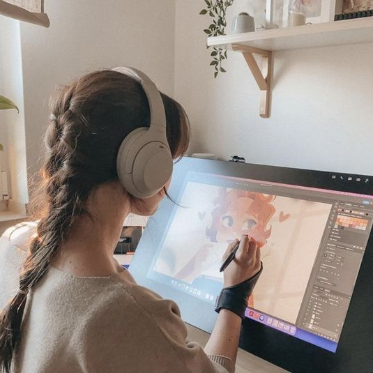
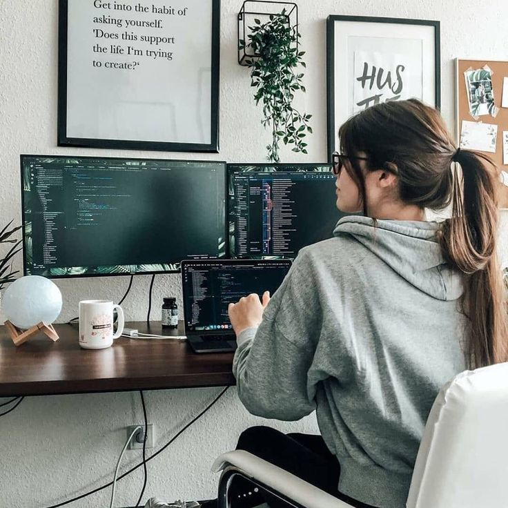
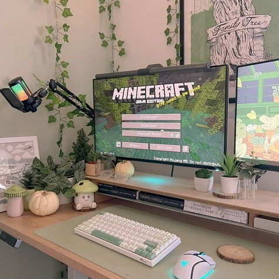

Quem sou eu?
Olá, meu nome é Fernanda, tenho 18 anos e sou estudante de Engenharia de Software na Unifil.
Adoro criar desenhos e illustrações digitais, sempre estou buscando maneiras de integrar essa paixão com a tecnologia. Esse interesse me levou a explorar o desenvolvimento de sites web, uma área onde posso combinar minha criatividade com minhas habilidades técnicas.
Estou me dedicando a aprender HTML, CSS, JavaScript e React para criar experiências web interativas e visualmente atraentes. Cada um dos meus projeto está postado em meu Github.
O que eu mais gosto de fazer:
-

Desenhar
Desde pequena eu sempre amei desenhar, e até hoje em dia esse é o meu hobbie favorito.
Eu prefiro ilustrações digitais do que tradicionais, mas adoro as duas. -

Programar
Desde quando eu me descrobri dentro da programação, eu não me canso de aprender cada vez mais, principalmente na área de frontend.
-

Jogar
Eu não jogo com muita frequência, mas quando tenho tempo gosto de jogar joguinhos como Minecraft ou RPGs com meu irmão mais novo.
Estudo:
Ensino Médio Técnico em Desenvolvimento Web (2020-2023)
Sesc Senac PR
Básico em HTML, CSS e Javascript; Sql e tabelas; Diagramas e Modelos; Prototipação no Figma.
Formação Front-end - HTML, CSS, JavaScript, React e + (50 Hrs)
Udemy
HTML, CSS e Javascript; React; Portfólio.
Curso de Inglês
Instituto Cultural/Legacy Education (2022-2025)
Inglês B2